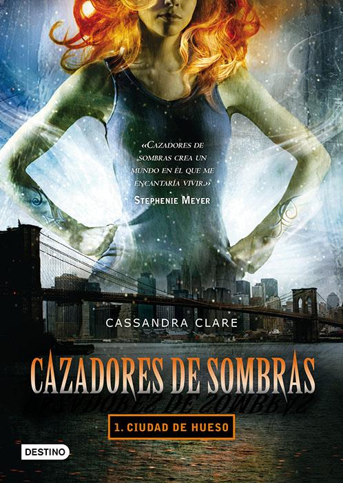

Saga Cazadores de Sombras

Ciudad de Huesos
Demonios, hombres lobo, vampiros, ángeles y hadas conviven en esta trilogía de fantasía urbana donde no falta el romance.
En el Pandemonium, la discoteca de moda de Nueva York, Clary sigue a un atractivo chico de pelo azul hasta que presencia
su muerte a manos de tres jóvenes cubiertos de extraños tatuajes. Desde esa noche, su destino se une al de esos tres cazadores
de sombras, guerreros dedicados a liberar a la tierra de demonios y, sobre todo, al de Jace, un chico con aspecto de ángel y
tendencia a actuar como un idiota...